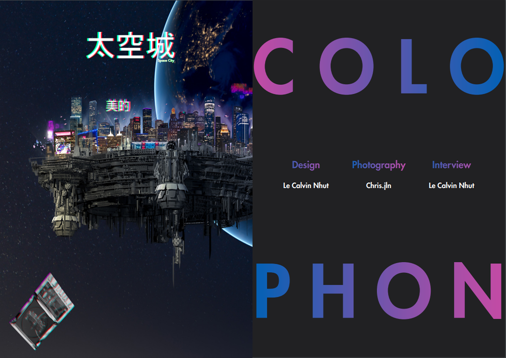
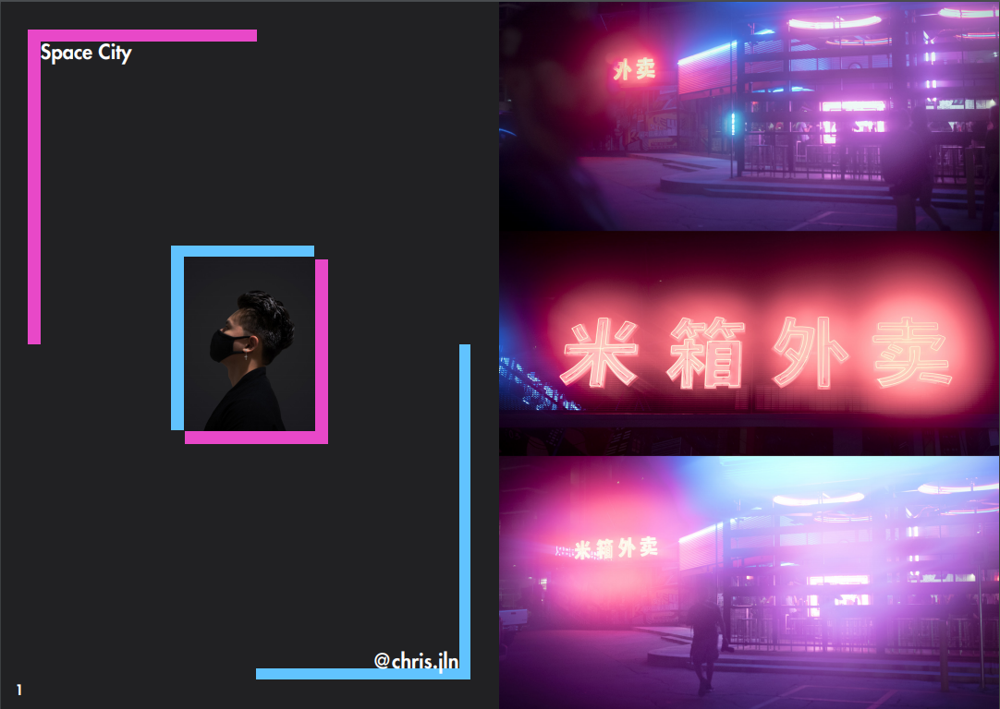
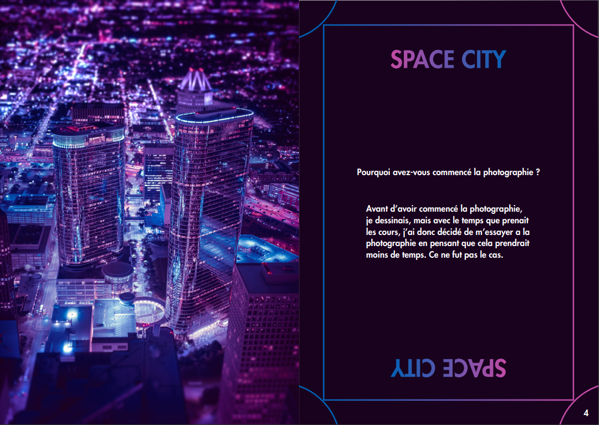
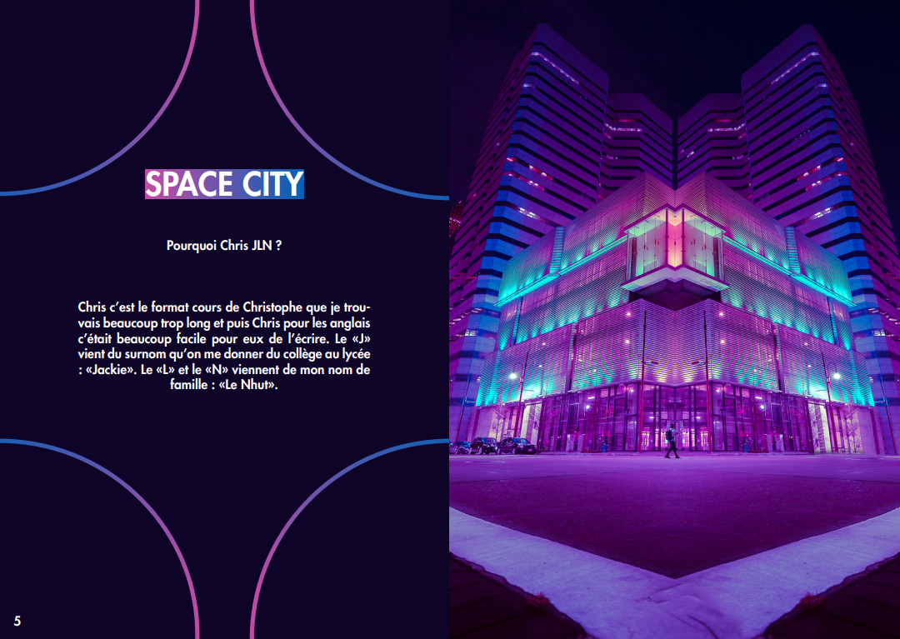
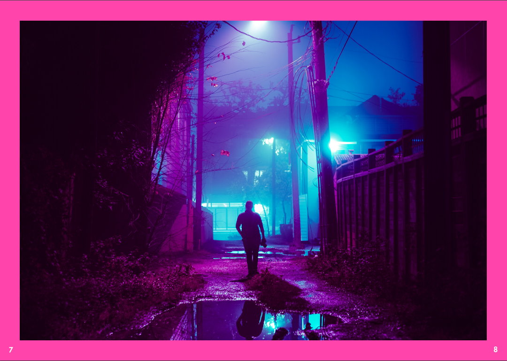
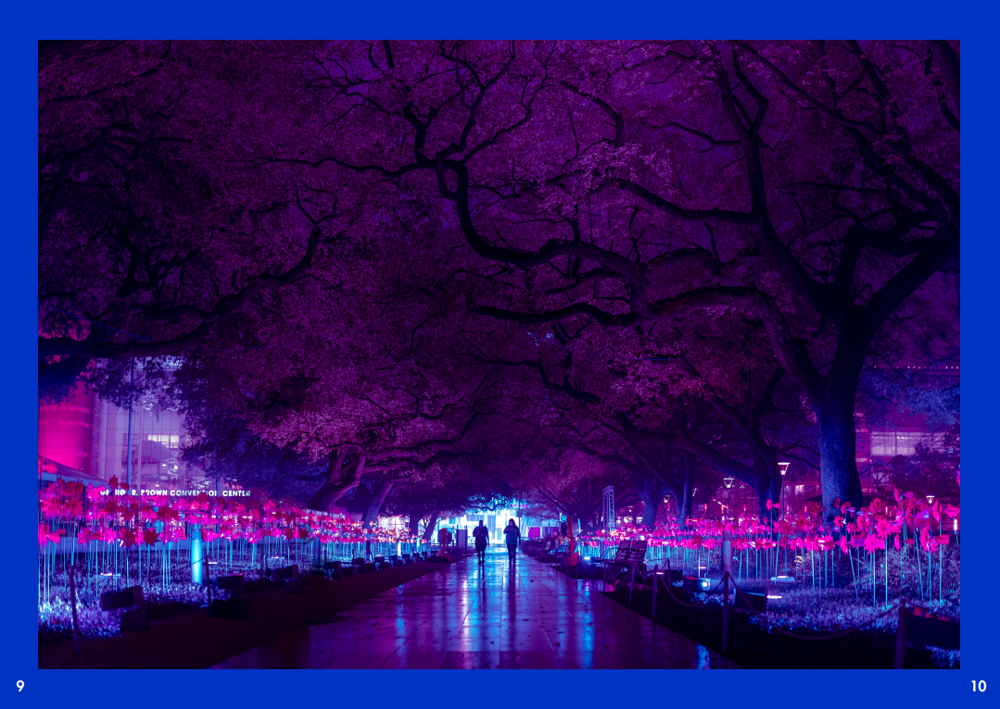
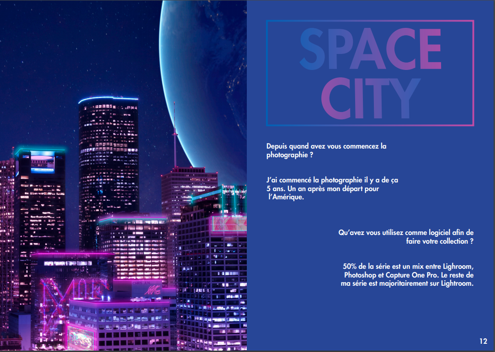
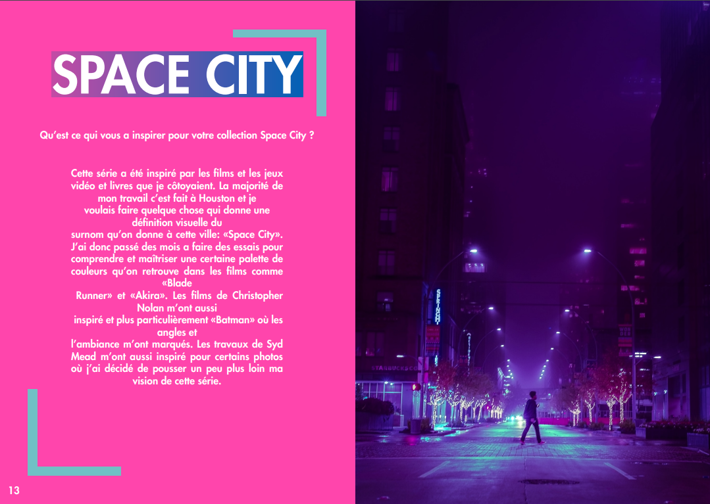

SPACE CITY FANZINE
Space city fanzine est un fanzine sur le photographe Chris JLN. Dans ce Fanzine nous retrouvons une interview que j'ai fait sur le photographe en general ainsi que sur sa collection Space City.







